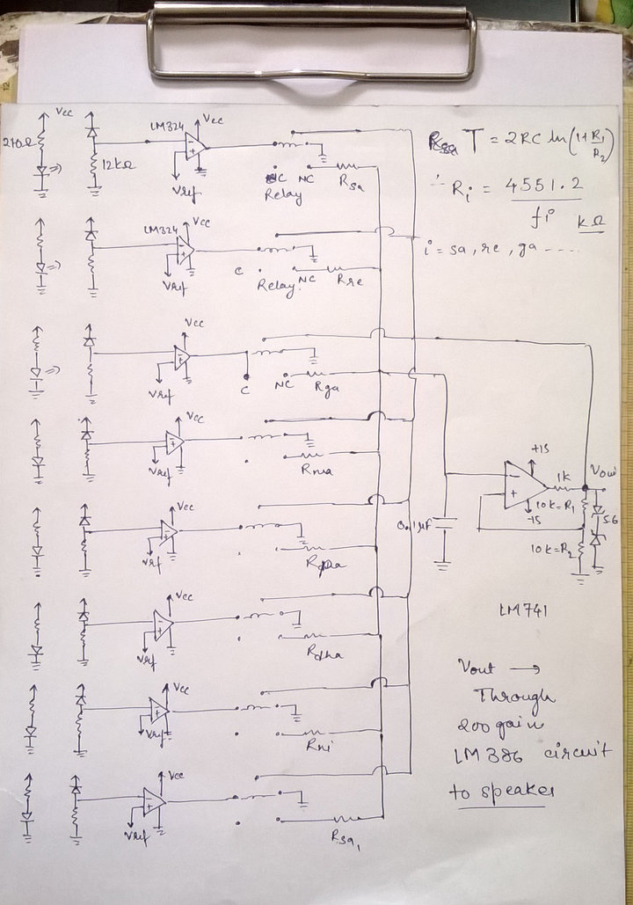

Analog Lab Project, 4th Semester IIT Bombay
This project was a week long project which I had to do as a part of Analog Lab. We were asked to make use of IR sensors and opamps in the project we choose. I developed an idea of making an air piano. Check out the video to see the final outcome.
The basic principle of this fun circuit is pretty simple. LM741 can act as an astable multivibrator with the circuit shown in the figure. It's time period is decided according to the values of the resistors and capacitors around it. So based upon the frequencies of sa-re-ga-ma-pa-dha-ni-sa we can get the different values of the resistors to generate the frequencies of the whole octave. Then this signals is passed through the power amplifier using LM386 and then to the speaker
Well, that does it for the piano part of the project. The air part is simple too whenevr a surface is brought close to an IR sensor pair, the photodiode(the reciever) recieves more IR rays due to the reflection(of the emitting rays produced by IR led) from the surface. This causes more voltage drop across that IR pair and then passing through a comparator LM324 it trips the relay and hence completing the astable LM741 circuit for that IR sensor. Shown below is the final circuit which I have had made.
